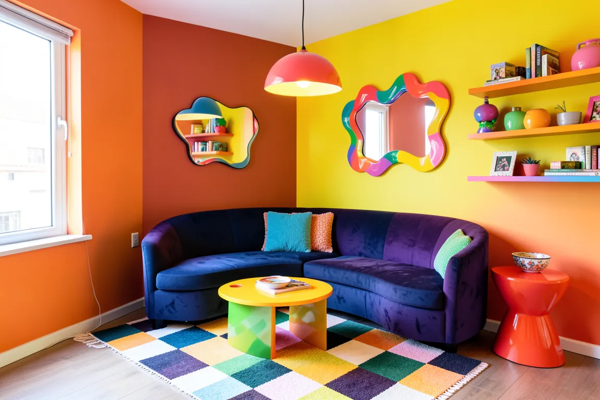

Комната, построенная для радости после лет дома в 2020 и 2021 годах. Насыщенные оттенки заливают стены, наличники и потолок; изогнутая надутая мебель из бархата и букле стоит на узорчатых коврах; вещи личные и разложены по цвету.

Главная идея
Цвет и игра дома поднимают настроение, а комната должна показывать радость живущего в ней человека.
Принципы дизайна
Залейте одну плоскость стены вместе с наличниками и её частью потолка в один насыщенный оттенок.
Берите 4–6 насыщенных оттенков и повторяйте каждый оттенок минимум в 3 местах комнаты.
Выбирайте изогнутые, таблеткообразные и надутые формы с радиусом углов 10 см и больше.
Кладите один узорчатый ковёр: шахматный, волну или свободную кляксу, с раппортом 20–40 см.
Ставьте самый сильный оттенок на стену в линии взгляда от входа.
Раскладывайте на полках книги и предметы по оттенку, в порядке радуги.
Дайте цвет и лампам: леденцовое стекло, акрил и абажуры-грибы.